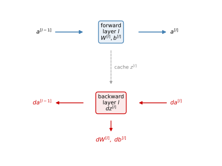
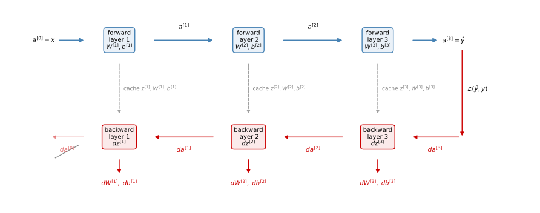
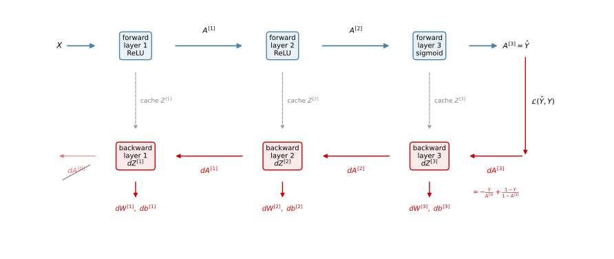
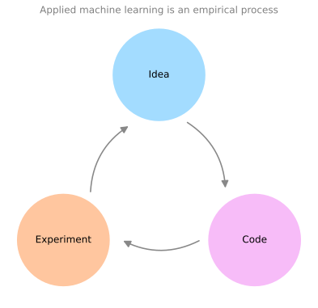

Building Blocks of Deep Neural Networks
deep-learning
neural-networks
backpropagation
hyperparameters
Forward and backward functions per layer, the cache, the general backpropagation equations, hyperparameters, and the brain analogy.
The previous page set up the notation for deep \(L\)-layer networks and their forward pass. You have already seen the basic components of forward propagation and backpropagation for a one hidden layer network. This page shows how to organize those components into per-layer building blocks, writes down the general equations each block implements, and closes with two shorter topics, hyperparameters and what all of this has to do with the brain.
Building Blocks: Forward and Backward Functions
Take a deep network and pick one layer, layer \(l\), and look at the computations focusing on just that layer. Layer \(l\) has parameters \(W^{[l]}\) and \(b^{[l]}\), and it participates in two computations.
- Forward step. Input the activations \(a^{[l-1]}\) from the previous layer and output \(a^{[l]}\), by computing \(z^{[l]} = W^{[l]} a^{[l-1]} + b^{[l]}\) and then \(a^{[l]} = g^{[l]}(z^{[l]})\). It turns out to be useful for later to also cache the value \(z^{[l]}\), storing it for the backpropagation step.
- Backward step. Input \(da^{[l]}\), the derivative with respect to this layer’s activations, together with the cache, and output \(da^{[l-1]}\), the derivative for the previous layer’s activations. Along the way, this function ends up computing \(dz^{[l]}\) and, most importantly, the gradients you need for learning, \(dW^{[l]}\) and \(db^{[l]}\).
Drawn as a diagram, layer \(l\) on its own looks like this, the forward function on top, the backward function below, and the cache handing \(z^{[l]}\) from one to the other.
If you can implement these two functions for one layer, the whole network is just a chain of them. The figure below shows one iteration, forward boxes left to right in blue, then backward boxes right to left in red, with each layer’s cache carrying \(z^{[l]}\) (together with \(W^{[l]}\) and \(b^{[l]}\), an implementation convenience explained below) from its forward box down to its backward box.

Reading the figure. The forward pass takes the input features \(a^{[0]} = x\), feeds them through the layer 1 forward function to compute \(a^{[1]}\) (using \(W^{[1]}\) and \(b^{[1]}\), caching \(z^{[1]}\)), feeds that to layer 2, and so on until the last layer outputs \(a^{[L]} = \hat{y}\). Then the backward pass is a backward sequence of iterations in which you go right to left computing gradients. Feed in \(da^{[L]}\), get \(da^{[L-1]}\), and so on down to \(da^{[1]}\). You could compute one more output, \(da^{[0]}\), shown crossed out in the figure, but that is the derivative with respect to the input features, which is not useful for training the weights of a supervised network, so you just stop there. Along the way, each backward box also outputs its layer’s \(dW^{[l]}\) and \(db^{[l]}\), and with all the derivatives in hand, gradient descent updates every layer,
\[ W^{[l]} := W^{[l]} - \alpha \, dW^{[l]} \qquad b^{[l]} := b^{[l]} - \alpha \, db^{[l]} \]
That is one iteration of gradient descent for a deep neural network.
One implementation detail. Conceptually the cache stores \(z^{[l]}\) for the backward function, but when you get to the programming exercise, you will find the cache is also a convenient way to hand the parameters \(W^{[l]}\) and \(b^{[l]}\) to the backward function, so in practice the cache stores \(z^{[l]}\), \(W^{[l]}\), and \(b^{[l]}\) together.
Review Questions
1. For layer \(l\), what does the forward function input, output, and cache?
TipAnswer
It inputs \(a^{[l-1]}\), outputs \(a^{[l]}\) (computed via \(z^{[l]} = W^{[l]} a^{[l-1]} + b^{[l]}\), \(a^{[l]} = g^{[l]}(z^{[l]})\) using the layer’s parameters), and caches \(z^{[l]}\) (in practice also \(W^{[l]}\) and \(b^{[l]}\)) for the backward step.
1. What does the backward function for layer \(l\) input and output?
TipAnswer
It inputs \(da^{[l]}\) and the cache, and outputs \(da^{[l-1]}\) for the previous layer plus the gradients \(dW^{[l]}\) and \(db^{[l]}\) that gradient descent uses to update the parameters. Internally it also computes \(dz^{[l]}\).
1. Why does the backward pass stop at \(da^{[1]}\) instead of continuing to \(da^{[0]}\)?
TipAnswer
\(da^{[0]}\) would be the derivative of the loss with respect to the input features \(x\). In supervised learning you are not trying to optimize the inputs, only the weights, so that derivative is not needed.
1. Which of the following is stored in the cache during forward propagation for later use in backward propagation?
- \(Z^{[l]}\)
- \(W^{[l]}\)
- \(b^{[l]}\)
TipAnswer
a. \(Z^{[l]}\) is the value computed during the forward pass that the backward pass genuinely needs, for example to evaluate \(g^{[l]\prime}(Z^{[l]})\) on the way to the gradients. The parameters \(W^{[l]}\) and \(b^{[l]}\) are not forward-pass computations; they ride along in the cache only as an implementation convenience.
Forward and Backward Propagation
Now let us write out exactly what each block computes. The forward function should already look familiar. For a single example,
\[ z^{[l]} = W^{[l]} a^{[l-1]} + b^{[l]} \qquad a^{[l]} = g^{[l]}\big(z^{[l]}\big) \]
and vectorized across the training set (the \(+\, b^{[l]}\) relying on Python broadcasting),
\[ Z^{[l]} = W^{[l]} A^{[l-1]} + b^{[l]} \qquad A^{[l]} = g^{[l]}\big(Z^{[l]}\big) \]
initialized with \(A^{[0]} = X\), and repeated left to right for \(l = 1, \ldots, L\).
Backward Function for One Layer
The backward function for layer \(l\) inputs \(da^{[l]}\) and computes four things,
\[ dz^{[l]} = da^{[l]} * g^{[l]\prime}\big(z^{[l]}\big) \]
\[ dW^{[l]} = dz^{[l]} \, a^{[l-1]\,T} \qquad db^{[l]} = dz^{[l]} \qquad da^{[l-1]} = W^{[l]\,T} dz^{[l]} \]
where \(*\) is the element-wise product. These are the same four steps you saw for the one hidden layer network, now written for a general layer.
NoteAside: The Collapsed \(dz^{[l]}\) Formula
If you take the expression for \(da^{[l]}\) coming from the layer above, \(da^{[l]} = W^{[l+1]T} dz^{[l+1]}\), and plug it into the \(dz^{[l]}\) equation, you get
\[ dz^{[l]} = W^{[l+1]\,T} dz^{[l+1]} \;*\; g^{[l]\prime}\big(z^{[l]}\big) \]
which is exactly the formula used for \(dz^{[1]}\) in the one hidden layer network. The two-step version with the explicit \(da^{[l]}\) and the collapsed one-step version compute the same thing.
Vectorized, with the \(\frac{1}{m}\) factors coming from the cost being the average of the per-example losses,
\[ dZ^{[l]} = dA^{[l]} * g^{[l]\prime}\big(Z^{[l]}\big) \]
\[ dW^{[l]} = \frac{1}{m} \, dZ^{[l]} A^{[l-1]\,T} \qquad db^{[l]} = \frac{1}{m} \, \texttt{np.sum}\big(dZ^{[l]}\text{, axis=1, keepdims=True}\big) \qquad dA^{[l-1]} = W^{[l]\,T} dZ^{[l]} \]
Initializing the Backward Recursion
The forward recursion is initialized with the input data \(X\). What initializes the backward recursion? For binary classification with the logistic loss, the derivative of the loss with respect to the final activation is
\[ da^{[L]} = -\frac{y}{a^{[L]}} + \frac{1 - y}{1 - a^{[L]}} \]
(the same expression derived for logistic regression). In the vectorized version, \(dA^{[L]}\) stacks that expression for each of the \(m\) training examples. In practice, just as before, the first backward step collapses. Feeding \(da^{[L]}\) through the \(dz\) formula with a sigmoid output gives the familiar starting point
\[ dZ^{[L]} = A^{[L]} - Y \]
and from there the whole backward chain unrolls layer by layer,
\[ dW^{[L]} = \frac{1}{m} \, dZ^{[L]} A^{[L-1]\,T} \qquad db^{[L]} = \frac{1}{m} \, \texttt{np.sum}\big(dZ^{[L]}\text{, axis=1, keepdims=True}\big) \]
\[ dZ^{[L-1]} = W^{[L]\,T} dZ^{[L]} * g^{[L-1]\prime}\big(Z^{[L-1]}\big) \]
\[ \vdots \]
\[ dZ^{[1]} = W^{[2]\,T} dZ^{[2]} * g^{[1]\prime}\big(Z^{[1]}\big) \qquad dW^{[1]} = \frac{1}{m} \, dZ^{[1]} A^{[0]\,T} \qquad db^{[1]} = \frac{1}{m} \, \texttt{np.sum}\big(dZ^{[1]}\text{, axis=1, keepdims=True}\big) \]
where \(A^{[0]\,T}\) is just another way of writing \(X^T\).
Putting It Together
To summarize with a three layer example, take the input \(X\), run it through a first layer with, say, a ReLU activation, a second layer with another ReLU, and a third layer with a sigmoid activation for binary classification, outputting \(\hat{Y}\) and the loss. That starts the backward iteration, which computes \(dW^{[3]}, db^{[3]}\), then \(dW^{[2]}, db^{[2]}\), then \(dW^{[1]}, db^{[1]}\), passing \(dA^{[2]}\) and \(dA^{[1]}\) backward along the way and reading each layer’s \(Z^{[l]}\) from the cache. (\(dA^{[0]}\) could be computed but is discarded.)

That is a lot of equations, and if you are feeling slightly confused, that is a normal reaction. The best advice is to wait for the programming assignment. When you implement these functions for yourself, they will feel much more concrete. The equations are just the calculus for computing the derivatives, and the derivation, especially for backprop, is genuinely one of the harder ones in machine learning, so feel free to work through it, but implementing it is what makes it click.
One closing thought worth keeping. Even experienced practitioners are sometimes surprised when their learning algorithm works, because a lot of the complexity, and a lot of the magic, comes from the data rather than from the code, which is often not that many lines. You feed a relatively short program a large amount of data, and remarkable behavior comes out of the combination.
Review Questions
1. Write the four equations the backward function for layer \(l\) implements (single example version).
TipAnswer
\[ dz^{[l]} = da^{[l]} * g^{[l]\prime}\big(z^{[l]}\big) \qquad dW^{[l]} = dz^{[l]} a^{[l-1]T} \qquad db^{[l]} = dz^{[l]} \qquad da^{[l-1]} = W^{[l]T} dz^{[l]} \] where \(*\) is the element-wise product.
1. What initializes the backward recursion for binary classification, and what does the first step simplify to?
TipAnswer
\(da^{[L]} = -\frac{y}{a^{[L]}} + \frac{1-y}{1-a^{[L]}}\), the derivative of the logistic loss with respect to the output activation (stacked across examples in the vectorized version). Combined with the sigmoid output activation, the first step collapses to \(dZ^{[L]} = A^{[L]} - Y\).
1. Where do the \(\frac{1}{m}\) factors in the vectorized \(dW^{[l]}\) and \(db^{[l]}\) come from?
TipAnswer
The cost is \(\frac{1}{m}\) times the sum of the per-example losses, so its derivatives inherit the same \(\frac{1}{m}\), exactly as in the one hidden layer network.
1. How does \(dZ^{[l]} = W^{[l+1]T} dZ^{[l+1]} * g^{[l]\prime}(Z^{[l]})\) relate to the two-step backward function?
TipAnswer
It is the collapsed form. The backward function for layer \(l+1\) outputs \(dA^{[l]} = W^{[l+1]T} dZ^{[l+1]}\), and substituting that into \(dZ^{[l]} = dA^{[l]} * g^{[l]\prime}(Z^{[l]})\) gives the one-step formula. Both compute the same value.
1. If \(L\) is the number of layers of a neural network, then \(dZ^{[L]} = A^{[L]} - Y\). True or False?
TipAnswer
True. The gradient of the output layer depends on the difference between the value computed during forward propagation, \(A^{[L]}\), and the target values \(Y\). It is the collapsed first step of the backward recursion for a sigmoid output with the logistic loss.
Parameters vs Hyperparameters
Being effective in developing deep networks requires organizing not only your parameters, but also your hyperparameters. What are hyperparameters?
The parameters of the model are \(W^{[1]}, b^{[1]}, W^{[2]}, b^{[2]}, \ldots\), the things the learning algorithm learns. But there are other numbers you need to tell your learning algorithm:
- the learning rate \(\alpha\), which determines how the parameters evolve,
- the number of iterations of gradient descent,
- the number of hidden layers \(L\),
- the number of hidden units \(n^{[1]}, n^{[2]}, \ldots\),
- the choice of activation function for the hidden layers (ReLU, tanh, sigmoid).
These are all called hyperparameters, because they are parameters that control the ultimate parameters \(W\) and \(b\) the training ends up with. Deep learning has a lot of hyperparameters, and the second course introduces more, such as momentum, the mini-batch size, and regularization parameters. (Technically \(\alpha\) is a parameter too, but since it determines the real parameters, it is consistently called a hyperparameter.)
Empirical Process
When you start on a new application, it is very difficult to know in advance the best values for the hyperparameters. So applying deep learning is a very empirical process. You have an idea, maybe a value for the learning rate, you implement it, try it out, and see how it works, then iterate, going around the same Idea, Code, Experiment cycle that opened the course.

Trying one value of \(\alpha\), you might see the cost \(J\) decrease slowly; a larger value might make the cost blow up and diverge; another value might drive the cost down fast to a low level, and that is the one you keep. (This is the same picture as the learning rate discussion in the machine learning course.) The same cycle applies to the number of layers, the number of hidden units, and every other hyperparameter. Try a range of values and see what works, evaluating on a holdout cross validation set.
Two more observations from practice.
- Intuitions about hyperparameters do not always transfer between domains. Researchers moving between computer vision, speech recognition, natural language processing, and structured data applications such as online advertising or product recommendations find that sometimes the intuitions carry over and sometimes they do not. Especially when starting a new problem, just try a range of values.
- Even on a single application worked on for a long time, the best hyperparameter values can change over time, for example because the computing infrastructure (CPUs, GPUs, networks) has changed. A rule of thumb for long-running projects is to re-test a few hyperparameter values every few months to check whether better settings have appeared.
This might seem like an unsatisfying part of deep learning, and it is an area where research is still advancing. The second course gives some systematic ways to explore the space of hyperparameters. For now, you gain intuition about the hyperparameters that work for your problems by experimenting.
Review Questions
1. What is the difference between a parameter and a hyperparameter? Give examples of each.
TipAnswer
Parameters are what the algorithm learns, the weights and biases \(W^{[l]}, b^{[l]}\). Hyperparameters are the settings you choose that control what those parameters end up being, such as the learning rate \(\alpha\), the number of iterations, the number of hidden layers \(L\), the number of hidden units per layer, and the choice of activation functions.
1. Why is applying deep learning described as an empirical process?
TipAnswer
Because it is very hard to know good hyperparameter values in advance. You cycle through idea, code, and experiment, trying values (for example several learning rates, watching whether the cost converges quickly, slowly, or diverges), evaluating on cross validation data, and keeping what works.
1. You tuned your system’s hyperparameters carefully a year ago. Can you rely on them still being the best today?
TipAnswer
Not necessarily. The best values can drift as data, hardware, and infrastructure change, so for long-running projects it is worth re-testing a few values every few months.
1. Which of the following are “parameters” of a neural network? (Check all that apply.)
- \(g^{[l]}\), the activation functions.
- \(W^{[l]}\), the weight matrices.
- \(b^{[l]}\), the bias vectors.
- \(L\), the number of layers of the neural network.
TipAnswer
b and c. The weight matrices and the bias vectors are the parameters of the network, the values gradient descent learns. The choice of activation functions and the number of layers are hyperparameters, settings you pick that control what the parameters end up being.
What Does This Have to Do with the Brain?
At the risk of giving away the punchline, the answer is not a whole lot. So why do people keep making the analogy between deep learning and the human brain?
When you implement a neural network, what you actually do is forward prop and backprop, the equations on this page. Because it has been difficult to convey intuitions about what these equations are really doing, computing a very complex function, the analogy “it is like the brain” became an oversimplified but seductive explanation. It is easy to say publicly, easy for media to report, and it certainly caught the popular imagination.
There is a very loose analogy between a logistic unit with a sigmoid activation and a biological neuron. A neuron in the brain, a single cell, receives electric signals from other neurons, does a simple thresholding computation, and if it fires, sends a pulse of electricity down its axon to other neurons. But today even neuroscientists have almost no idea what a single neuron is doing; a single neuron appears to be much more complex than we are able to characterize, and while some of what it does is a little like logistic regression, much about it no one understands. How neurons in the human brain learn is still a very mysterious process, and it is completely unclear whether the brain uses anything like backpropagation or gradient descent, or some fundamentally different learning principle.
A better mental model is that deep learning is very good at learning very flexible, very complex functions, \(x\) to \(y\) mappings, input-output mappings in supervised learning. The brain analogy may have been useful once, and computer vision has perhaps taken a bit more inspiration from the brain than other disciplines, but the field has largely moved past it.
You now know how to implement forward prop and backprop and gradient descent for deep neural networks. Next come the programming assignments that build a deep network step by step and apply it, and after that, the second course of the specialization.
Review Questions
1. In what limited sense is a unit of a neural network like a biological neuron?
TipAnswer
A biological neuron receives signals from other neurons, performs a simple thresholding computation, and fires an output along its axon, loosely like a logistic unit combining inputs and applying a sigmoid. The analogy stops there. Even a single biological neuron is far more complex than we can characterize, and how the brain learns is unknown.
1. Why has the brain analogy persisted, and what is a better one-line description of what deep learning does?
TipAnswer
The analogy is a simple, seductive explanation for equations whose workings are hard to convey, so it spread easily in public discussion. A better description is that deep learning is very good at learning very flexible, complex input-output mappings from data in supervised learning.